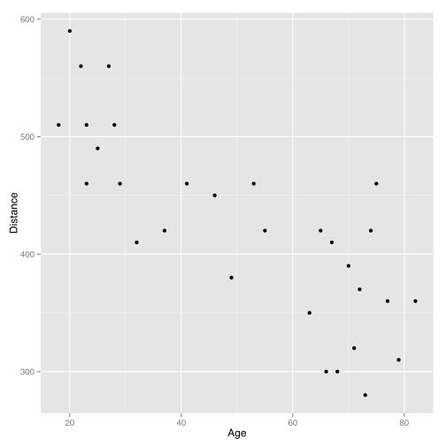
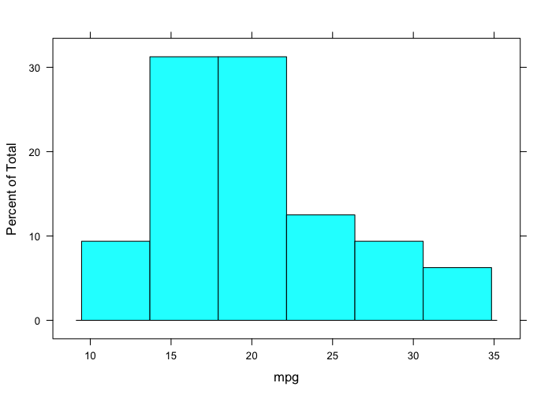

Slidio
Integrated Learning Environment
Ramnath Vaidyanathan
Assistant Professor, McGill
Probability Distributions
Curve of Forgetting

Multi Text
Find the following areas under the standard normal curve, in percents. Please don't enter the percent sign.
A. between -1.2 and 0.5
B. to the right of 0.4
Answer
Learn By Doing
TabRow
home
profile
One Categorical Variable
The same survey that asked 1,200 U.S. college students about their body perception also asked the following question:
"With whom do you find it easiest to make friends?" (opposite sex, same sex or no difference).
In this activity we will use the collected data to:
- learn how to tally our data into a table of counts and percents.
- learn how to produce a pie chart.
Distribution
Let us start by creating a frequency table of the data. We will use the tally function in the mosaic package to achieve this.
x variable name
data dataset name
format count, proportion or percent
margins should marginal distributions be displayed?
Ex 1.86 SAT vs. ACT
Eleanor scores 680 on the Mathematics part of the SAT. The distribution of SAT scores in a reference population is Normal, with mean 500 and standard deviation 100. Gerald takes the American College Testing (ACT) Mathematics test and scores 27. ACT scores are Normally distributed with mean 18 and standard deviation 6. Assuming that both tests measure the same kind of ability, who did better?
- Eleanor
- Gerald
The best way to compare their performance is to calculate their standardized scores.
\[z_E = \frac{680 - 500}{100} = 1.8\] \[z_G = \frac{27 - 18}{6} = 1.5\]
Since, Eleanor has a higher standardized score, we can conclude that Eleanor did better!
Facebook Friends
The number of facebook friends a person has is normally distributed with mean 190 and standard deviation 36. Answer the next three questions based on this.
Ex 1
The number of facebook friends a person has is normally distributed with mean 190 and standard deviation 36. If the number of friends Chris has is 2.5 standard deviations above the mean, how many friends does he have?
Ex 2
Approximately _____ % of people have more than 262 facebook friends.
Think in terms of how many standard deviations away 262 is from 190.
Ex 3
Approximately _____ % of people have less than 154 facebook friends.
Background
Sandra Guerra Thompson, a Professor of Law and Criminal Justice and Institute Director at the University of Houston Law Center, wrote Beyond a Reasonable Doubt? Reconsidering Uncorroborated Eyewitness Identification Testimony, in 2008 in the U. C. Davis Law Review.
This article reviews the overwhelming scientific evidence that establishes that eyewitnesses are notoriously inaccurate in identifying strangers, especially under the conditions that exist in many serious offenses such as robbery. Many of the factors that tend to decrease the accuracy of an identification are intrinsic to a witness’ abilities, and not the product of inappropriate suggestion by the police.
We know, for example, that eyewitnesses identify a known wrong person (a “filler” or “foil”) in approximately 20% of all real criminal lineups.
Using the data that 20% of eyewitnesses identify a known wrong person, we wish to create a probability distribution and answer some probability questions.
Source: CMU Open Learning
# Let's look at the shape of the full model surface.
# expand.grid makes it easy to generate an evenly spaced
# grid of predictors over the entire design space.
grid <- expand.grid(
class = unique(mpg$class),
displ = seq(min(mpg$displ), max(mpg$displ),
length = 20)
)
grid$consump <- predict(mod1, newdata = grid)
qplot(displ, consump, data = mpg) +
geom_line(data = grid, colour = "grey50") +
facet_wrap(~ class)
qplot(displ, resid, data = mpg) + facet_wrap(~ class)
Polling Report
Did I Get?
According to pollingreport.com, a poll conducted by FOX News estimated that on the issue of abortion, roughly 44% of registered voters in the United States are pro-choice, and roughly 47% are pro-life (the remaining 9% are undecided). What is the probability that two simultaneously and randomly chosen registered voters are pro-life?
Submit and Compare ClearLinda
Linda is 31 years old, single, outspoken, and very bright. She majored in philosophy. As a student, she was deeply concerned with issues of discrimination and social justice, and also participated in anti-nuclear demonstrations.
Which is more probable?
- Linda is a bank teller.
- Linda is a bank teller and is active in the feminist movement.
If you chose (2), stop back and think. Suppose we denote the event of Linda being a teller by A and the event she is active in the feminist movement by B, then probabilities in question can be written as.
- P(A)
- \(P(A \cap B)\)
This is called the conjugacy fallacy that occurs when it is assumed that specific conditions are more probable than a single general one.
Correlation

Which of these two scatterplots have a higher correlation?
- A
- B
Both have the same correlation.
Smoke Alarms
A homeowner has two smoke detector alarms installed, one in the dining room (adjacent to the kitchen) and one in an upstairs bedroom (above the kitchen). If cooking produces smoke in the kitchen, the probability of setting off the dining room alarm (D) is 0.5. The probability of setting off the bedroom alarm (B) is 0.4. The two alarms detect smoke independently of each other. If there is smoke in the kitchen, what is the probability that the smoke will be detected and will set off an alarm?
- 0.9
- 0.2
- 0.7
- 0.5
Solution
Let's first understand what the probability is that we need to find: The smoke from the fire is detected if it sets off the dining room alarm (D) or the bedroom alarm (B) or both, and therefore P(smoke is detected) = P(D or B), which is the probability we need to find.
To that end, we are given a few pieces of information. Let's summarize them:
- P(D) = 0.95
- P(B) = 0.40
Hence, we can use the general addition rule and write
P(D or B) = P(D) + P(B) - P(D)*P(B)
Question 1
What is the sample space for this experiment?
Submit and Compare ClearQuestion 2
Question 3
A researcher wished to compare the average daily hotel room rates between San Francisco and Los Angeles. The researcher obtained an SRS of 27 hotels in downtown San Francisco and found the sample mean to be \$156, and a standard deviation of \$18. The researcher also obtained an independent SRS of 24 hotels in downtown Los Angeles and found the sample mean to be \$143, with a standard deviation of \$10.
Binomial Coefficient
The number of ways of arranging k successes among n observations is given by the binomial coefficient $${n \choose k} = \frac{n!}{(n - k)!}$$
You can use the factorial function in R to compute this coefficient using the formula. An easier way to achieve the same is to directly use the choose function.
choose(5, 3)
## [1] 10
factorial(5)/(factorial(3)*factorial(2))
## [1] 10
Ex: Use the choose function to compute $6 \choose 3$
Normal Approximation to Binomial
Suppose \(X \sim Bin(n, p)\) follows a binomial distribution with n trials and success probability p. For large values of n, we can approximate the distribution of \(X\) using a normal distribution.
\[X \sim N(\mu = np, \sigma = \sqrt{np(1-p)})\]
Tip: This is especially useful while calculating cumulative probabilities such as $P(X \le x)$, since you can use the standard normal table instead of summing up the binomial probabilities over values 0 through x.
Problem
You ask an SRS of 200 adults if they are concerned about nutrition when eating away from home. Let \(X\) represent the total count of people responding "Yes". If the national proportion \(p = 0.4\) holds in your area, what is the probability that \(X\) lies between 75 and 85?
Solution
We can approximate the distribution of \(X\) using a normal distribution with mean \(\mu = np\) and standard deviation \(\sigma = np(1-p)\).
We can do all the computations using R, as shown below.
n = 200; p = 0.4
mu = n * p
sigma = sqrt(n * p * (1 - p))
pnorm(85, mu, sigma) - pnorm(75, mu, sigma)
## [1] 0.5295
You can visualize the probabilities here
Binomial Setting
To identify, if a setting fits the binomial distribution, you need to verify four things.
- Does every trial have two outcomes?
- Do we have a fixed number of trials?
- Are the trials independent?
- Is the probability of success constant across all trials?
State Hypotheses
Let \(\mu_{LA}\) and \(\mu_{SF}\) represent the average daily hotel room rates for the two cities. The null hypothesis is that there is no difference between the average rates for these two cities, while the alternate hypothesis is that there is a difference. Accordingly,
\[ \begin{aligned} H_0: \mu_{LA} - \mu_{SF} & = 0 \\ H_a: \mu_{LA} - \mu_{SF} & \neq 0 \\ \end{aligned} \]
The 68 - 95 - 99.7 Rule

Check
- Question 1
- Question 2
- Question 3
Ex 1.83 Young Mens Heights
Example
The distribution of heights of young men is approximately Normal with mean 69 and standard deviation 2.5 inches. Use the 68 - 95 - 99.7 rule to determine the following.
- What percent of these men are taller than 74 inches?
- Between what heights do the middle 95% of young men fall?
- What percent of young men are shorter than 66.5 inches?
Solution
- 74 is 2 sd's away from 69. Hence, 2.5% of young men are taller than 74.
- Roughly 95% of young men should have heights between \(69 \pm 2 \times 2.5\)
- 66.5 is one sd to the left of the mean. Hence, 16% of the young men are shorter than 66.5 inches.
Ex 1.34 NCAA Partial Qualifiers
The NCAA considers a student a "partial qualifier" eligible to practice and receive an athletic scholarship, but not compete, if the combined SAT score is at least 720. What proportion of all students who take the SAT would be partial qualifiers?

Ex 1.114 Length of Pregnancies
The length of human pregnancies from conception to birth varies according to a distribution that is approximately Normal with mean 266 days and standard deviation 16 days.
- What percent of pregnancies last fewer than 240 days?
- What percent of pregnancies last between 240 and 270 days?
- How long do the longest 25% pregnancies last?
- 5.2081
- 54.6625
- 276.7918
Normal Distributions
A distribution of test scores is approximately normal with mean 65 and SD 10. Approximate (please don't enter units):
- The percent of scores between 50 and 70:
- The 75th percentile of the scores:
- The interquartile range of the scores
We can compute the answers using R.
A. The percent of scores between 50 and 70 is given by
p70 = pnorm(70, mean = 65, sd = 10)
p50 = pnorm(50, mean = 65, sd = 10)
p70 - p50
## [1] 0.6247
B. The 75th percentile of scores is given by
qnorm(p = 0.75, mean = 65, sd = 10)
## [1] 71.74
C. The interquartile range of the scores can be found to be
Q3 = qnorm(0.75, mean = 65, sd = 10)
Q1 = qnorm(0.25, mean = 65, sd = 10)
Q3 - Q1
## [1] 13.49
Highway Signs
A Pennsylvania research rm conducted a study in which 30 drivers (of ages 18 to 82 years old) were sampled, and for each one, the maximum distance (in feet) at which he/she could read a newly designed sign was determined. The goal of this study was to explore the relationship between a driver's age and the maximum distance at which signs were legible, and then use the study's findings to improve safety for older drivers.
| Age | Distance |
|---|---|
| 18 | 510 |
| 20 | 590 |
| 22 | 560 |
| 23 | 510 |
| 23 | 460 |
| 25 | 490 |
OkCupid
The solid curve represents the distribution of heights of all males in the US. The dotted curve represents the distribution of heights reported by males on OkCupid, an online dating website.


Distance vs. Age

Form
The form of the relationship is its general shape. When identifying the form, we try to find the simplest way to describe the shape of the scatterplot. There are many possible forms. Here are a couple that are quite common:
Question 6.2
The medical director of a large company is concerned about the effects of stress on the company’s younger executives. According to the National Center for Health Statistics, the mean systolic blood pressure for males 35 to 44 years of age is 128 and the standard deviation in this population is 15. The medical director examines the records of 72 executives in this age group and finds that their mean systolic blood pressure is 129.93. Is this evidence that the mean blood pressure for all the company’s young male executives is higher than the national average? Use \(\alpha = 0.05\).
Given
- \(\bar{x} = 129.93\)
- \(\sigma = 15\)
- \(n = 72\)
- \(\mu_0 = 128\)
Step 1. State Hypothesis
The medical director is interested in evidence that supports his hypothesis that the mean blood pressure for the company's male executives is higher than the national average (which is 128). Hence, this would be the alternate hypothesis.
\[\begin{aligned} H_0: \mu & = 128 \\ H_a: \mu & > 128 \\ \end{aligned}\]
Tip: Always start by writing the alternate hypothesis first. Remember that the way hypothesis testing is set up, the statement you want to support should be cast as the alternate hypothesis. The NULL hypothesis can NEVER be proved!
Step 2. Identify Test Statistic
We are testing a hypothesis about a single mean. Moreover, we DONT know the standard deviation of the population. Hence, we use a 1-sample t-test with \(T \sim t(df = n - 1)\).
| Description | Formula | Value |
|---|---|---|
| Parameter | \(\mu\) | |
| Statistic | \(\bar{x}\) | |
| Std.Error | \(\frac{s}{\sqrt{n}}\) |
Boxplots
Below is a boxplot of yearly income by marital status for individuals in the United States.

Click p to see the R code used to create the plot.
Which of the following can you conclude from the plot? (Check all that apply)
- The 25th percentile of the income for married individuals is almost the same as the median for individuals living together but not married.
- The medians for all individuals who are not currently married are almost the same.
- There are more individuals who are widowed than divorced in this data set.
- There are more individuals who were never married than divorced in this data set.
Learning Environments
- Slides
- Screencasts
- Slidecasts
- Integrated
Slides
Screencasts
Slidecasts
Integrated Learning Environment
Execute Code
Answer Quiz
Consider the assignment x <- c('alpha', TRUE, 1). What would be the class of x?
- character
- numeric
- logical
- mixed
A vector is a collection of items of the same type!
A vector is a collection of items of the same type. Since, x consists of items of different types, R does what is called type coercion and converts everything to a character.
Stemplots
x <- rnorm(100)
stem(x)
The decimal point is at the |
-2 | 3
-1 | 9665421110000
-0 | 9988877776666665544444433332221111111
0 | 011123344555555555777777888999
1 | 0000012334566789
2 | 269
Percentile
The nth percentile of an observation variable is the value that cuts off the first n percent of the data values when it is sorted in ascending order.
Example
Find the 32nd, 57th and 98th percentiles of the eruption durations in the data set faithful.
Solution
We use the quantile function to compute the percentiles of eruptions with the desired percentage ratios.
> quantile(faithful$eruptions, c(0.32, 0.57, 0.98))
## 32% 57% 98%
## 2.395 4.133 4.933
Exercise
Interquartile Range
The interquartile range of an observation variable is the difference of its upper and lower quartiles. It is a measure of how far apart the middle portion of data spreads in value.

Source: Boston University
Interquartile Range
We can use the IQR function to compute the interquartile range of a variable x.
> x <- c(62, 63, 64, 70, 72, 76, 77, 81, 81)
> IQR(x)
## [1] 13
Exercise
Histogram

Histograms
Boxplot

Boxplot
It is easy to draw a boxplot in R using the bwplot function in the lattice package. Let us draw a boxplot of the variable mpg in the data set mtcars.
bwplot(~ mpg, data = mtcars)

Draggable
General Multiplication Rule
$$P(A \cap B) = P(A) \times P(B \mid A) $$
Question
If two events A and B are independent, which of the following are TRUE?
- P(A | B) = P(A and B)
- P(A | B) = P(A)
- P(A | B) = P(B)
- P(A | B) = 0
- P(A and B) = P(A) x P(B)
Finding Help
RSeek
Split-Apply-Combine